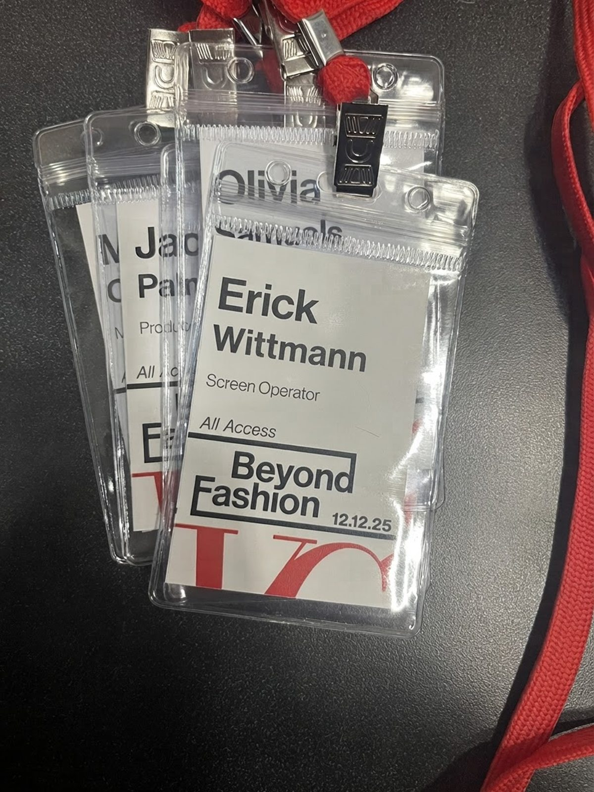
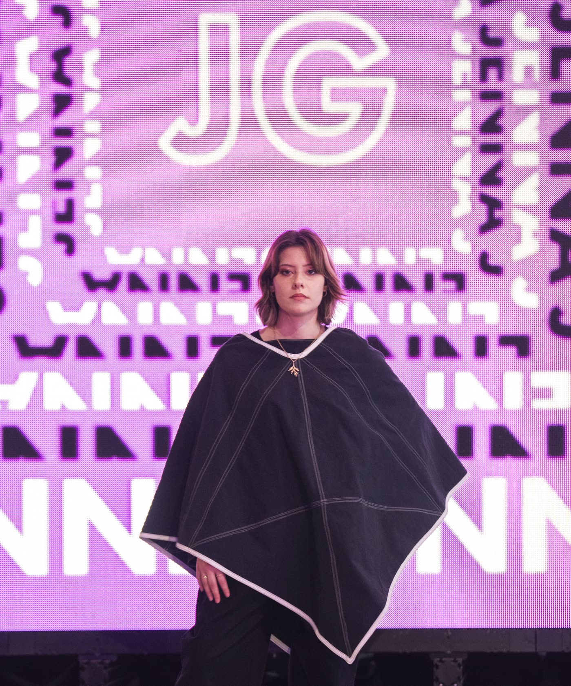
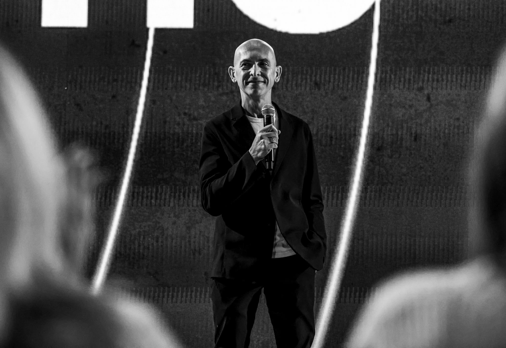

Case Study 01 — Live Visuals
Beyond Fashion 2025
- Role
- VJ — live graphics & lighting
- Tools
- Resolume Arena, After Effects
- Team
- New Media Design students
- When
- Fall 2025



 vj-station.jpg — photo at the desk
vj-station.jpg — photo at the desk
Overview
Last year, in Fall 2025, I had the amazing opportunity to be a VJ for Beyond Fashion, an experimental fashion show at my university. I worked with a team of designers on the motion graphics and deliverables for a huge 32′ × 16′ LED wall at the show.
I was in charge of directing the live graphics and lights while the show was running, pairing them with each model's walkthrough, all in Resolume Arena and After Effects.
Production
The graphics for Beyond Fashion were created by a group of students in New Media Design.
Each student was responsible for a selection of looping graphics tailored to each fashion designer.


 Layout — floor plan and setup
Layout — floor plan and setup
Layout
We students were also tasked with designing the layout of the show.
We went through many iterations. The final design notates seating arrangements, ticket prices for seats, the runway layout, model pose spots, camera crew positions and more.



bf-execution.mp4 — show dayExecution
On show day, December 12, 2025, I worked as the Screen Operator, running the LED wall and the lights live from the VJ station.
Everything ran in Resolume Arena, with the looks we'd built in After Effects ready to trigger as the show moved from one designer to the next.